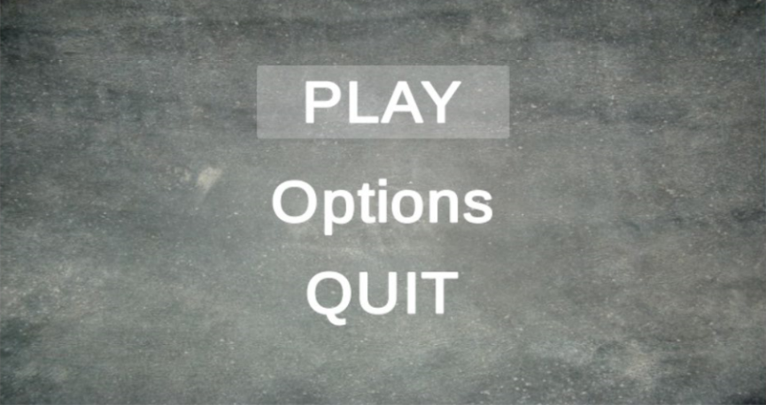
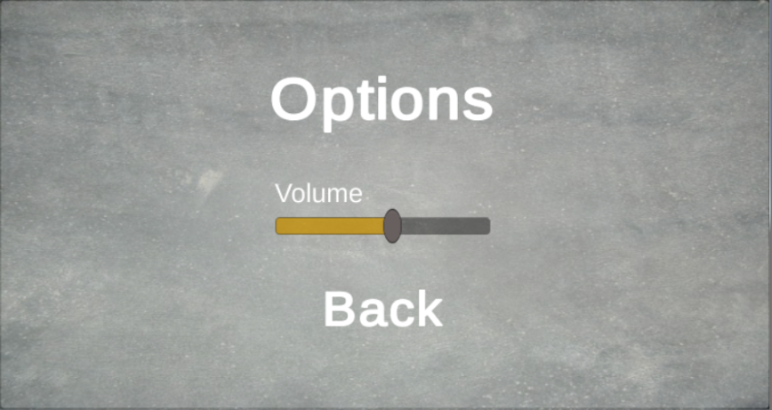

Screens
The Main Menu (above) is the first screen the user will see upon opening the VR experience. It includes a Play button, that allows the user to begin the game, an Options button, and a Quit button to exit the menu.
When the user clicks the Options button from the main menu, the above screen appears. The user can adjust the volume control and (soon to be added) the brightness of the screen.
Navigation
The user will be able to select items from the menus by hovering over the item (looking at it) and waiting for the reticle to cycle (approximately 2 seconds). The user knows which option they are hovering over because the item is highlighted.